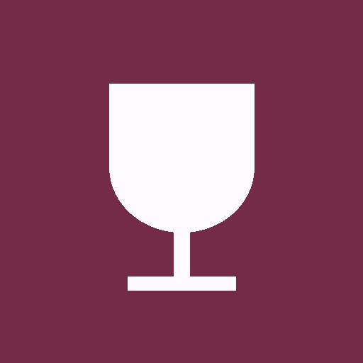

Своё Вино / Иконка приложенияИсследование, 21.09.2026Выбран основной вариант №24 · В дизайн-систему →
Вино, пёс и цельная форма.
Развиваем выбранные 10, 11, 12 и 16: наклон бутылки, круг, гексагон и поиск с персонажем. Серия 09–16 ↗ Первая серия 01–08 ↗

Сейчас — белый бокалЧитается хорошо, но обозначает вино вообще. В нём нет ни поиска, ни характера нашего маскота. Поэтому ищем более собственный образ, сохраняя простоту.
Четыре пары для сравнения17–18: развитие 11. 19–20: развитие 12. 21–22: добавляем вино и пса к 10. 23–24: объединяем 16 и 11. Круг и гексагон — внутренняя композиция; внешняя форма иконки на устройстве задаётся системой.
Проверяем в миниатюре
Должны различаться бутылка, наклон и характер пса. Детали этикетки вторичны. Большой рисунок не гарантирует читаемости 32 px: сравните нижние миниатюры перед выбором.
Предыдущая серия · Полные промпты